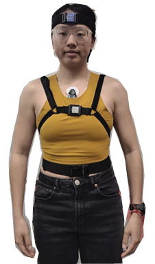

Research Interests
My research focuses on improving our understanding of human health and function by analyzing complex physiological and biomechanical signals collected through wearable sensors.
Remote Monitoring of Head Motion
I study head kinematics and the relationship between motion and cardioautonomic response, using IMUs and ECGs to explore how these systems interact across different populations, including individuals with concussions or vestibular hypofunction. My work is driven by a commitment to translating these insights into practical applications that enhance clinical outcomes and everyday function.
- Cho S.Y., Fino P. C. "Quantifying Daily Head Turns And Head-Trunk Coupling In Healthy Adults". International Conference on Ambulatory Monitoring of Physical Activity and Movement (ICAMPAM) 2024, Rennes, FR. June 2024 Oral Presentation
- Cho S.Y., Monoli C., Dibble L. E., Fino P. C. “Measuring Head Movements During Free-Living Daily Life In People with Mild Traumatic Brain Injuries”. International Society of Gait & Posture Research (ISPGR) World Congress 2025, Maastricht, NL. June 2025. Oral Presentation